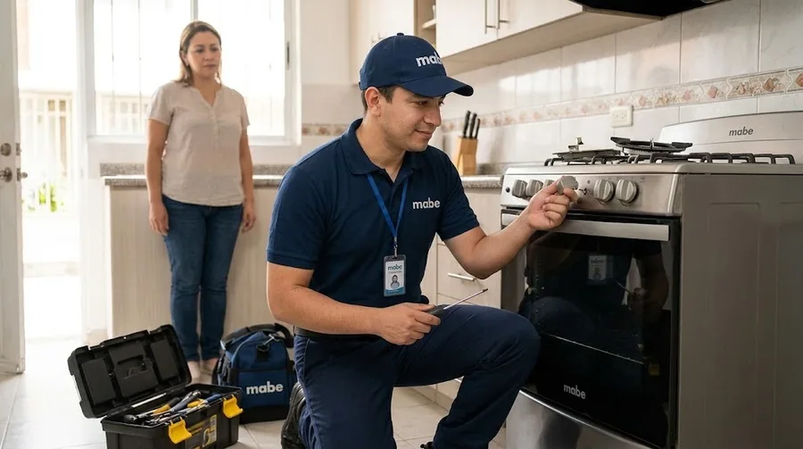
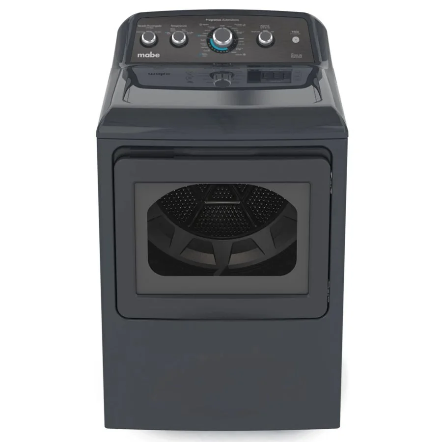
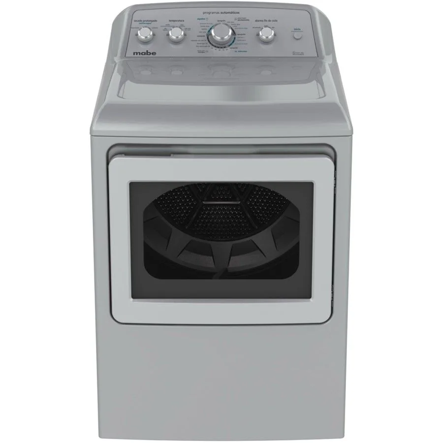

Qué incluye
- Limpia el filtro de pelusas después de cada ciclo.
- Revisa y limpia el ducto de salida de aire al menos una vez al año.
- No sobrecargues el tambor: la ropa necesita espacio para voltear.
- Prueba de funcionamiento y recomendaciones
Cuándo conviene
Se recomienda hacerlo una vez al año, o antes si el equipo hace ruidos nuevos o rinde menos.
Equipos relacionados
Cómo pedir la visita
- Escríbenos por WhatsApp o llámanos al 099 350 8191
- Cuéntanos qué equipo es, la marca, el modelo y la falla
- Envía tu barrio y, si puedes, una foto de la etiqueta y un video corto
- Coordinamos el día y la hora de la visita
Dónde atendemos en Quito
Preguntas frecuentes
¿Cada cuánto se da mantenimiento a la secadora?
Una vez al año en uso normal; más seguido si trabaja mucho.
¿El mantenimiento evita reparaciones?
Reduce el riesgo de fallas, pero no las elimina: las piezas se desgastan con el uso.
¿Cómo contacto al servicio técnico?
Por WhatsApp o llamada al 099 350 8191 (+593 99 350 8191).